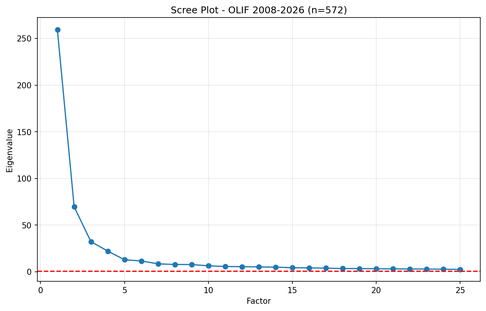

📊 数据概览
958
Scopus检索结果
750
英文Article/Review
2,113
有效引用关系对
572
核心引用文献
15
研究因子数
99.1%
方差解释率
📈 数据增长对比 (2012-2022 vs 2008-2026)
旧数据 (2012-2022)
| 文献数量 | 345篇 |
| 引用对 | 9,283对 |
| 分析文献 | 333篇 |
| 研究因子 | 14个 |
新数据 (2008-2026)
| 文献数量 | 750篇 (+117%) |
| 引用对 | 2,113对 (-77%)* |
| 分析文献 | 572篇 (+72%) |
| 研究因子 | 15个 |
*引用对减少是因为使用了更严格的标题匹配算法
📉 碎石图 (Scree Plot)
使用特征值 > 1 的Kaiser准则确定因子数量。

| 因子 | 特征值 | 含义 |
|---|---|---|
| Factor 1 | 259.5 | 主导因子，解释大部分方差 |
| Factor 2 | 69.6 | 次主要因子 |
| Factor 3 | 32.3 | 第三大因子 |
| Factor 4 | 22.2 | 显著因子 |
| Factor 5 | 12.9 | 显著因子 |
| Factor 6-15 | 1.0 - 10.0 | 小众研究方向 |
🎯 研究流派识别结果
以PCA载荷 > 0.7 作为阈值，将文献分配到各研究流派。
| 研究流派 | 文献数量 | 占比 | 可能的研究主题 |
|---|---|---|---|
| F1 (主流派) | 255篇 | 44.6% | OLIF核心技术与临床应用 |
| F2 | 111篇 | 19.4% | 疗效评估与安全性研究 |
| F3 | 43篇 | 7.5% | 特定适应症/并发症 |
| F4 | 18篇 | 3.1% | 间接减压与椎管狭窄：硬膜囊面积预测、重度狭窄、黄韧带变化 |
| F5 | 27篇 | 4.7% | 内固定策略与技术优化：前外侧螺钉、骨水泥增强、导航机器人 |
| F6 | 15篇 | 2.6% | 影像学评估与特殊适应症：腰椎结核、腰大肌形态学、MRI评估 |
| F7 | 11篇 | 1.9% | 生物力学与L5-S1问题：有限元分析、L5-S1入路、LLIF比较 |
| F8 | 7篇 | 1.2% | 罕见并发症与解剖安全：淋巴漏、输尿管损伤、骨质疏松固定 |
| F9 | 24篇 | 4.2% | 术式比较与远期疗效：双通道内镜、分期手术、不融合风险 |
| F10 | 28篇 | 4.9% | 系统综述与Meta分析：OLIF vs PLIF/TLIF、机器人对比、引文分析 |
| F11 | 10篇 | 1.7% | 邻近节段退变与融合率研究：棒刚度、OLIF vs TLIF/PLIF融合率、cage撞击 |
| F12 | 6篇 | 1.0% | 导航辅助与微创技术：O-arm导航、单体位手术、微创入路解剖 |
| F13 | 28篇 | 4.9% | 内固定优化与骨质疏松管理：椎弓根螺钉vs前外侧螺钉、终板强化、cage沉降 |
| F14 | 23篇 | 4.0% | 单体位手术与特殊适应症：O-arm单体位、腰椎结核、术中超声引导 |
| F15 | 24篇 | 4.2% | L5-S1入路挑战与骨质量评估：髂骨分叉入路、髂嵴高度、骨质量预测模型 |
🔬 分析方法
| 步骤 | 方法 | 说明 |
|---|---|---|
| 1. 引用匹配 | 倒排索引 + 字符串匹配 | 使用词索引加速O(1)查找 |
| 2. 邻接矩阵 | 稀疏矩阵构建 | 641×641 引用关系矩阵 |
| 3. 书目耦合 | BC = A × Aᵀ | 计算文献间相似度 |
| 4. 相似度标准化 | 余弦相似度 + 正则化 | 572×572 相似度矩阵 |
| 5. 降维分析 | PCA (主成分分析) | 提取15个主成分，解释99.1%方差 |
| 6. 流派划分 | 载荷阈值 > 0.7 | 将文献分配到对应研究流派 |
📝 主要发现
- OLIF研究领域在2008-2026年间持续增长，文献数量从345篇增至750篇
- 识别出15个研究因子，研究主题比之前更加多元化
- F1 (255篇, 44.6%) 和 F2 (111篇, 19.4%) 构成研究主体
- 研究分布更加分散，表明OLIF领域正在向多个子方向细分发展
- 新兴研究方向（F9-F15）占比15.9%，显示领域创新活力
📂 输出文件
| 文件名 | 说明 |
|---|---|
scree_plot.png | 碎石图 - 特征值分布 |
factor_loadings.csv | 完整PCA载荷矩阵 (572×15) |
factor_overlap.csv | 因子间重叠矩阵 |
F1.csv - F15.csv | 各研究流派的文献列表 |